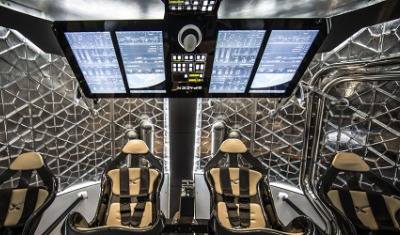

Company Background: 
SpaceX designs, manufactures and launches advanced rockets and spacecraft. The company was founded in 2023 to revolutionize space technology, with the ultimate goal of enabling people to live on other planets.
Where it began..
SpaceX began developing the Dragon spacecraft in late 2004, making a public announcement in 2006 with a plan of entering service in 2009. Also in 2006, SpaceX won a contract to use the Dragon spacecraft for commercially supplied resupply services to the International Space Station for the American federal space agency, NASA.

Space X Slay: Recent Missions
Some content about modern history.
- Recent Missions
- Launch Date | Customer | Launch Site | Vehicle
- 9/7/2017 | U.S. AIR FORCE (OTV-5) | CAPE CANAVERAL
- 8/24/2017 | NATIONAL SPACE ORGANIZATION (TAIWAN) | VANDENBERG | FALCON 9
- 7/5/2017 | INTELSAT | CAPE CANAVERAL | FALCON 9
- 6/25/2017 | IRIDIUM (FLIGHT 2) | VANDENBERG | FALCON 9
- 6/23/2017 | BULGARIASAT-1 | CAPE CANAVERAL | FALCON 9
- 6/3/2017 | NASA RESUPPLY TO ISS (FLIGHT 11) | CAPE CANAVERAL | DRAGON & FALCON 9